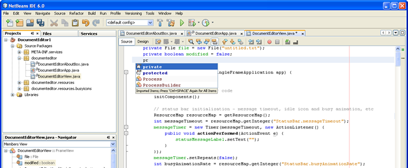

Bonjour et bienvenue à la page d'accueil de NetBeans, l'EDI Java Open Source!

Cliquez sur l'image pour une vue en plein écran
Aujourd'hui, deux projets existent: L'EDI NetBeans et la Plateforme NetBeans.
L'EDI NetBeans est un environnement de développement - un outil pour les programmeurs pour écrire, compiler, déboguer et déployer des programmes. Il est écrit en Java - mais peut supporter n'importe quel langage de programmation. Il y a également un grand nombre de modules pour étendre l'EDI NetBeans. L'EDI NetBeans est un produit gratuit, sans aucune restriction quant à son usage.
Également disponible, La Plateforme NetBeans; une fondation modulable et extensible utilisée comme brique logicielle pour la création d'applications bureautiques. Les partenaires privilégiés fournissent des modules à valeurs rajoutées qui s'intègrent facilement à la Plateforme et peuvent être utilisés pour développer ses propres outils et solutions.
Les deux produits sont open source et gratuits pour un usage commercial et non-commercial. Le code source est disponible pour réutilisation sous la Common Development and Distribution License (CDDL).
NetBeans offre une variété de liste de distribution pour rencontrer votre niveau d'intérêt et pour faciliter la communication entre les utilisateurs de NetBeans. Voyez la page des listes de distribution de NetBeans à l'adresse https://netbeans.org/community/lists/index.html pour en savoir plus à propos des listes de distribution de NetBeans.
Liens Rapide :
La liste nbdiscuss_fr@netbeans.org est une liste de discussion très générale, ayant des sujets tournant autour de NetBeans, des trucs et astuces, tout cela en FRANCAIS! Abonnez-vous à nbdiscuss_fr@netbeans.org.
Club d'entraide des développeurs francophones : NetBeans
Pour en savoir plus sur les activités de la communauté francophone des traducteurs de NetBeans inscrivez-vous sur fr@translatedfile.netbeans.org. Abonnez-vous à fr@translatedfiles.netbeans.org.
{kind=link}